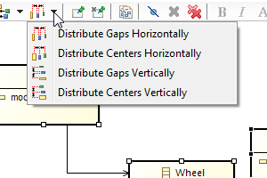
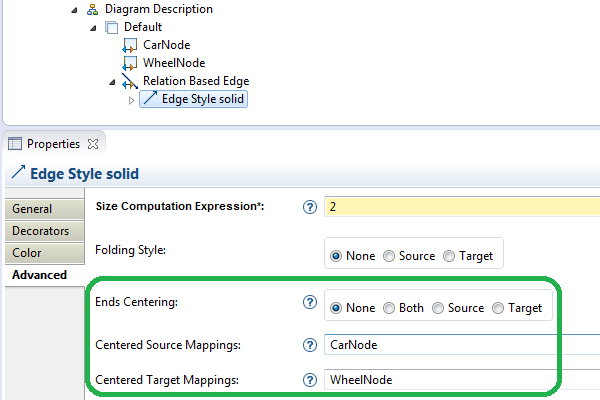
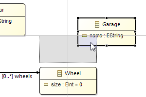
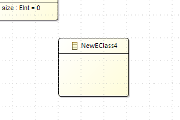
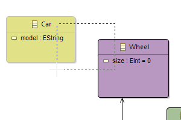
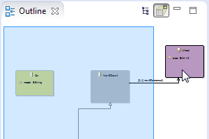
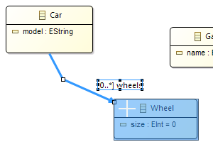
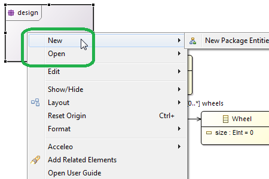

Sirius Web version is now available! Learn More
For this release, a special effort was made on the performance and scalability.
These improvements have been tested and validated with models composed of more than 500 000 model elements displayed in 20 000 representations.
This release comes with many ergonomic improvements for a better edition of diagrams.
Now users can homogeneously distribute shapes: horizontaly or vertically, based on the gap between shapes or their centers.

The creator of the modeling tool can force an edge end to be always directed toward the center of a node.

Now, the Snap to Shape option is selected by default on new diagrams. It displays smart guides to help you aligning objects to each others.

When creating a new object with the Snap to grid option activated, it is automatically aligned to the grid.

When drawing a selecting zone on a diagram, each object touched by this zone will be added to the selection (before, the selected objects had to be entirely inside the zone).

When an object is not visible on the diagram, its selection from the outline reveals it: Sirius automatically moves the displayed zone of the diagram in order to make the object visible.

The move and resize of existing elements is better managed:

The former Navigate menu on a diagram element has been replaced by two distinct ones:

New APIs have been added to run Sirius without any UI.
Things like loading a representation resource, creating a diagram, refreshing it, modifying the model and saving can now be used as a server-side or continuous integration process.
The complete list of changes is available here: http://wiki.eclipse.org/Sirius/2.0.0#New_.26_Noteworthy.